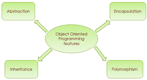

•In order for a programming language to be object-oriented, it has to enable working with classes and objects as well as the implementation and use of the fundamental object-oriented principles and concepts: inheritance, abstraction, encapsulation and polymorphism.

•One of the most important concepts in object-oriented programming is that of inheritance.
• Inheritance allows us to define a class in terms of another class, which makes it easier to create and maintain an application. This also provides an opportunity to reuse the code functionality and fast implementation time.
•When creating a class, instead of writing completely new data members and member functions, the programmer can designate that the new class should inherit the members of an existing class. This existing class is called the base class, and the new class is referred to as the derived class.
•The word polymorphism means having many forms.
•Typically, polymorphism occurs when there is a hierarchy of classes and they are related by inheritance.
•polymorphism means that a call to a member function will cause a different function to be executed depending on the type of object that invokes the function.
•Abstraction is the quality of dealing with ideas rather than events.
•A class which contains the abstract keyword in its declaration is known as abstract class.
•Abstract classes may or may not contain abstract methods, i.e., methods without body ( public void get(); )
•But, if a class has at least one abstract method, then the class must be declared abstract.
•If a class is declared abstract, it cannot be instantiated.
•To use an abstract class, you have to inherit it from another class, provide implementations to the abstract methods in it.
•If you inherit an abstract class, you have to provide implementations to all the abstract methods in it.
•Encapsulation is a mechanism of wrapping the data (variables) and code acting on the data (methods) together as a single unit.
• In encapsulation, the variables of a class will be hidden from other classes, and can be accessed only through the methods of their current class. Therefore, it is also known as data hiding.
To achieve encapsulation in Java −
•Declare the variables of a class as private.
•Provide public setter and getter methods to modify and view the variables values.
•An interface is defined as a syntactical contract that all the classes inheriting the interface should follow.
•The interface defines the 'what' part of the syntactical contract and the deriving classes define the 'how' part of the syntactical contract.
You can have multiple definitions for the same function name in the same scope. The definition of the function must differ from each other by the types and/or the number of arguments in the argument list.
You cannot overload function declarations that differ only by return type.
•If we inherit a class into the derived class and provide a definition for one of the base class's function again inside the derived class, then that function is said to be overridden, and this mechanism is called Function Overriding